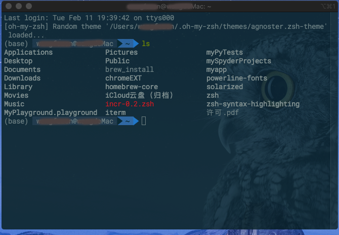

iterm2+oh-my-zsh：打造Mac上漂亮又好用的终端
配置后的效果，看着是不是很炫。

下面进入正题
前言
zsh介绍
- zsh完全兼容bash
- zsh具有强大的可定制的特点，支持许多插件，补全功能也很强大
- 明显缺点是配置麻烦
zsh的一些命令：
查看当前使用的shell
MacOS默认安装zsh，确认你是否安装过zsh：
zsh --version
echo $SHELL
/bin/bash
查看安装的 shell
cat /etc/shells
/bin/bash
/bin/csh
/bin/ksh
/bin/sh
/bin/tcsh
/bin/zsh
使用 brew 更新 zsh
brew install zsh
==> Downloading https://homebrew.bintray.com/bottles/zsh-5.5.1.high_sierra.bottle.tar.gz
######################################################################## 100.0%
==> Pouring zsh-5.5.1.high_sierra.bottle.tar.gz
/usr/local/Cellar/zsh/5.5.1: 1,444 files, 12MB
切换为 zsh
chsh -s /bin/zsh
重启终端即可使用 zsh。
所以，就有了神器oh-my-zsh来拯救广大的猿们。
oh-my-zsh安装
oh-my-zsh介绍
- 一款社区驱动的命令行工具，大神汇聚
- 有许多精美的主题和强大的插件，可定制性强，美观方便
- 有比bash更强大别名功能，实用高效。
- github: https://github.com/ohmyzsh/ohmyzsh
下载安装oh-my-zsh
方式一：使用git 这里下载到~/.oh-my-zsh下
git clone https://github.com/robbyrussell/oh-my-zsh.git ~/.oh-my-zs
方式二：使用curl
sh -c "$(curl -fsSL https://raw.github.com/robbyrussell/oh-my-zsh/master/tools/install.sh)"
方式三：使用wget
sh -c "$(wget https://raw.github.com/robbyrussell/oh-my-zsh/master/tools/install.sh -O -)"
接下来备份配置文件，也可直接在usr目录中复制副本
cp ~/.zshrc ~/.zshrc.orig
然后创建一个新的配置文件
cp ~/.oh-my-zsh/templates/zshrc.zsh-template ~/.zshrc
切换默认shell为zsh
chsh -s /bin/zsh
最后完成效果，如下：
sh -c "$(curl -fsSL https://raw.github.com/robbyrussell/oh-my-zsh/master/tools/install.sh)"
____ / /_ ____ ___ __ __ ____ _____/ /_
/ __ \/ __ \ / __ `__ \/ / / / /_ / / ___/ __ \
/ /_/ / / / / / / / / / / /_/ / / /_(__ ) / / /
\____/_/ /_/ /_/ /_/ /_/\__, / /___/____/_/ /_/
/____/ ....is now installed!
Please look over the ~/.zshrc file to select plugins, themes, and options.
p.s. Follow us at https://twitter.com/ohmyzsh.
p.p.s. Get stickers and t-shirts at http://shop.planetargon.com.
Mac 下隐藏显示隐藏文件
当升级到OS X >=10.9 Mavericks
defaults write com.apple.finder AppleShowAllFiles Yes && killall Finder //显示隐藏文件
defaults write com.apple.finder AppleShowAllFiles No && killall Finder //不显示隐藏文件
快捷键：在 macOS Sierra，可以使用快捷键⌘⇧.(Command + Shift + .) 来快速（在 Finder 中）显示和隐藏隐藏文件了。
iterm2下载安装
方法一：官方网站下载直接安装
下载安装完成后，/bin目录下就会有一个zsh的文件夹，zsh就是一个新的终端，默认带git命令。现在设置zsh为默认终端：
chsh -s /bin/zsh
方法二：使用Homebrew安装
brew cask install iterm2
使用brew cask要先安装cask
brew install caskroom/cask/brew-cask
homebrew-cask与brew的区别：
brew是下载源码解压然后./configure && make install, 并且会自动配置好环境变量。
brew cask主要用于有GUI的软件，下载已经编译好的应用包(.dmg/.pkg)。
更换iterm2的主题为Dracula
1、下载iterm2的Dracula主题
git clone https://github.com/dracula/iterm.git
设置主题：
- iTerm2 > Preferences > Profiles > Colors Tab
- Open the Color Presets
- 从列表中选择import
- 选择刚才下载主题中Dracula.itermcolors 文件，确定
- 再次打开Color Presets… ，选择Dracula

安装powerline字体
git clone https://github.com/powerline/fonts.git --depth=1
进入字体目录，安装所需字体：
cd fonts
./install.sh
cd ..
rm -rf fonts
或者，直接使用命令行安装
pip install powerline-status --user
打开iTerm2，按照路径打开：iTerm2 –> Preferences –> Profiles –> text，找到Font处修改。
安装PowerFonts
安装字体库需要首先将项目 git clone 至本地，然后执行源码中的install.sh。
# git clone
git clone https://github.com/powerline/fonts.git --depth=1
# cd to folder
cd fonts
# run install shell
./install.sh

安装好字体库之后，设置iTerm2的字体，具体的操作：
iTerm2 -> Preferences -> Profiles -> Text，
在 Font 区域选中 Change Font，然后找到 Meslo LG 字体。有L、M、S可选，看个人喜好。

修改配色方案
最新的iterm 中默认安装了Solarized Dark Higher Contrast配色方案，所以打开iTerm2，按照路径打开：iTerm2 –> Preferences –> Profiles –> color可做修改。

更换背景
更换背景图片方式：iTerm2 -> Preferences -> Profiles -> Window -> BackGround Image勾选图片即可。

oh-my-zsh主题配置
主题一：random
终端运行vim命令或在usr中直接打开.zshrc文件编辑
vim ~/.zshrc
# Path to your oh-my-zsh installation.
export ZSH="/Users/yourname/.oh-my-zsh"
# to know which specific one was loaded, run: echo $RANDOM_THEME
# See https://github.com/ohmyzsh/ohmyzsh/wiki/Themes
# ZSH_THEME="robbyrussell"
ZSH_THEME=random
# Set list of themes to pick from when loading at random
# Setting this variable when ZSH_THEME=random will cause
配置项 ZSH_THEME 即为 oh-my-zsh 的主题配置。当设置为 ZSH_THEME=random 时，每次打开终端都会使用一种随机的主题。
更多主题见oh-my-zsh的主题列表。
最后，更新配置source ~/.zshrc
主题二：/powerlevel9k
1、主题下载，并导入oh-my-zsh的themes文件夹中：
git clone https://github.com/bhilburn/powerlevel9k.git ~/.oh-my-zsh/custom/themes/powerlevel9k
2、修改配置文件~/.zshrc
ZSH_THEME="powerlevel9k/powerlevel9k"
3、更新配置文件
source ~/.zshrc
轻度定制：默认的powerlevel9k主题最右侧显示的元素为：每条命令的执行状态，历史命令条数，当前时间，这样也比较冗余。我在这里将 历史命令条数 这一元素去掉，这样看起来比较简洁。这需要修改 ~/.zshrc 配置文件，在后面追加如下内容，定制该主题的显示元素。
修改配置文件~/.zshrc：
#设置 oh-my-zsh powerlevel9k 主题左边元素显示
POWERLEVEL9K_LEFT_PROMPT_ELEMENTS=(context dir rbenv vcs)
#设置 oh-my-zsh powerlevel9k 主题右边元素显示
POWERLEVEL9K_RIGHT_PROMPT_ELEMENTS=(status root_indicator background_jobs time)
主题三：Dracula
1、下载主题文件
$ git clone https://github.com/dracula/zsh.git
2、创建一个指向Oh my zsh主题文件夹的符号链接
DRACULA_THEME是你刚才下载主题的目录
$ ln -s $DRACULA_THEME/dracula.zsh-theme ~/.oh-my-zsh/themes/dracula.zsh-theme
3、修改zsh主题。编辑usr下.zshrc文件，修改ZSH_THEME为
$ vim ~/.zshrc
ZSH_THEME="dracula"
4、最后，更新配置文件
source ~/.zshrc
主题四：powerline下载安装
powerline官网：https://powerline.readthedocs.io/en/latest/installation.html
里面有详细的安装设置
1、下载主题 powerline-theme
git clone git://github.com/jeremyFreeAgent/oh-my-zsh-powerline-theme
下载完后安装主题，执行目录下的脚本install.sh，将主题 powerline.zsh-theme 放入 ~/.oh-my-zsh/themes/ 内
sudo ./oh-my-zsh-powerline-theme/install.sh
2、安装主题所需要的字体，否则会乱码
git clone https://github.com/powerline/fonts.git
sudo ./fonts/install.sh
3、找到“文本->>字体->>更改” ，”所有字体”中选中“ Meslo LG M for powerLine“ 字体
4、设置oh my zsh 配置文件
vim ~/.zshrc //vim 编辑 zshrc 配置文件
修改文件此处需要用到vim命令，此处不做演示
或者用一个自己熟悉的编辑器打开这个文件，可以找到这一项：ZSH_THEME
ZSH_THEME="robbyrussel"
plugins=(git autojump osx brew node npm)
最后保存，重启终端命令行即可看到powerLine 主题。
oh-my-zsh必备插件汇总
插件一：incr自动补全插件
下载 incr 自动补全插件，并将插件放在 oh-my-zsh 自定义插件目录中.
在 /.oh-my-zsh/plugins 中添加 incr文件夹，并拷入文件incr-0.2.zsh，然后在配置文件结束添加：
source $ZSH/custom/plugins/incr/incr*.zsh
最后，更新配置文件
source ~/.zshrc
实现效果，如官网所示：

插件二：命令提示插件 zsh-autosuggestions
实现效果:输入g会出现相应提示，按↑即可补全

步骤如下：
- 下载命令提示插件
- 编辑配置文件，使用插件
- 添加配置文件
sudo git clone https://github.com/zsh-users/zsh-autosuggestions ~/.zsh/zsh-autosuggestions
vim ~/.zshrc
source ~/.zsh/zsh-autosuggestions/zsh-autosuggestions.zsh
插件三：语法高亮显示
zsh-syntax-highlighting插件可以使终端输入的命令有语法高亮效果，修改～/zshrc配置文件：
git clone https://github.com/zsh-users/zsh-syntax-highlighting.git ~/.oh-my-zsh/custom/plugins/zsh-syntax-highlighting
在配置文件中查找设置plugins的行，并添加插件.
注意：zsh-syntax-highlighting 必须放在最后面（官方推荐）*
plugins=(
git
......
........
zsh-syntax-highlighting
)
# 添加以下内容到文件末
source ~/.zsh/zsh-syntax-highlighting/zsh-syntax-highlighting.zsh

最后，更新配置文件
source ~/.zshrc
本文参考网站如下，很是感谢：